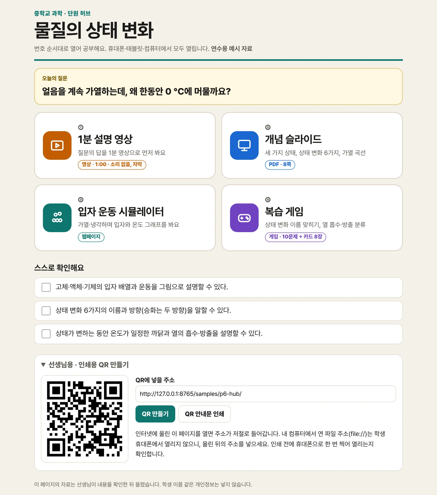

단원 허브 페이지로 묶어 나누기
P2~P5 결과물을 학생이 한 쪽에서 여는 허브 페이지를 Code 탭으로 만들고, GitHub Pages로 올려 QR로 나눕니다.
- 목표
- 큰 단추 4개(영상·슬라이드·시뮬레이터·게임)와 인쇄용 QR이 있는 학생용 단원 허브를 만들어 인터넷에 올린다 (예시: 중학교 과학 — 물질의 상태 변화, 8차시 정리와 가정 학습)
- 준비물
- P2~P5 결과물이 든
물질의상태변화폴더 · GitHub 계정 (8차시) - 결과물
05_허브페이지/site/폴더 (허브index.html+ 자료 사본) ·https://아이디.github.io/저장소이름/주소와 QR 안내문- 주의
- 공개 저장소는 누구나 볼 수 있음 — 학생 이름·사진·성적 넣지 않기 · 원본 파일은 옮기거나 지우지 않기
지금까지 만든 자료가 폴더 네 곳에 흩어져 있습니다. 학생에게 주소 네 개를 나누는 대신 한 쪽에서 모두 여는 허브를 만들어 주소와 QR 하나로 나눕니다. 핵심은 둘입니다. 원본은 그대로 두고 올릴 파일만 site 폴더에 복사해 묶는 것, 그리고 모든 링크를 상대 주소로 만들어 내 PC에서도 인터넷에서도 똑같이 열리게 하는 것입니다. GitHub Pages에 올리는 자세한 순서는 8차시와 같아서 여기서는 요약만 합니다.
먼저 볼 영상

1 준비
물질의상태변화폴더에 P2~P5 결과물이 있는지 봅니다:01_수업PPT/상태변화_개념.pdf,02_시뮬레이터/index.html,03_복습게임/index.html,04_설명영상/설명영상.mp4. 빠진 것은 그 쪽을 먼저 하거나, 결과 예시 파일(PDF · 시뮬레이터 · 게임 · 영상)을 받아 같은 자리에 넣습니다.- GitHub 가입과 공개(Public) 저장소 만들기는 8차시 1~2단계를 따릅니다. 무료 계정에서는 공개 저장소만 Pages를 쓸 수 있습니다.
2 따라 하기
번호 순서대로 진행합니다. 프롬프트가 필요한 단계에는 바로 아래에 복사 단추가 있습니다. [GitHub] 단계는 웹 브라우저에서 합니다.
- Code 탭에서 환경은 Local 맨 위 항목, 폴더는 Open folder… 로
물질의상태변화(하위 폴더가 아니라 그 위 폴더), 권한 모드는 Plan 을 고릅니다. 여러 하위 폴더의 파일을 읽어야 하기 때문입니다. - 계획을 받습니다.
지금까지 만든 «물질의 상태 변화» 자료를 학생이 한곳에서 여는 단원 허브 페이지를 만들려고 합니다. 먼저 계획만 세워 주세요. 연결한 폴더(물질의상태변화)의 자료 - 01_수업PPT/상태변화_개념.pdf (없으면 pptx만 있다고 알려 주기) - 02_시뮬레이터/index.html - 03_복습게임/index.html - 04_설명영상/설명영상.mp4 (내레이션을 넣었다면 설명영상_내레이션.mp4) 요구 사항 - 05_허브페이지/site 폴더를 새로 만들고, 위 파일을 복사해 넣기 (원본은 옮기거나 지우지 않기) - site/index.html 이 허브. 외부 라이브러리·인터넷 없이 열리고, 모든 링크는 상대 주소 - site 안의 폴더·파일 이름은 영어 소문자·숫자로 (slides.pdf, sim/index.html, game/index.html, video.mp4) - 학생용: 단원 이름, 오늘의 질문 «얼음을 계속 가열하는데, 왜 한동안 0 °C에 머물까요?», 번호를 붙인 단추 4개(영상 → 슬라이드 → 시뮬레이터 → 게임) - «스스로 확인해요» 체크 3개 (입자 배열과 운동 / 상태 변화 6가지와 승화의 두 방향 / 온도가 일정한 까닭과 열의 흡수·방출) - 휴대폰에서 한 손으로 누르기 쉬운 큰 단추, 키보드 초점 표시 - 선생님용 접힘 칸: 이 페이지 주소의 QR을 만들고 QR 안내문을 인쇄하는 단추. QR 만드는 코드는 파일 안에 넣고(인터넷 없이), 쓴 코드의 라이선스를 주석으로 밝히기 - 학생 이름·사진 같은 개인정보는 넣지 않기 계획에는 site 폴더 구조, 화면 구성, 다 만든 뒤 확인할 방법(모든 링크가 열리는지 포함)을 적어 주세요.
«복사해 넣기 (원본은 옮기거나 지우지 않기)»가 이 쪽의 핵심 문장입니다. 원본 폴더는 계속 고쳐 쓰는 작업장이고, site 폴더는 학생에게 내보내는 진열장입니다. 영어 소문자 파일 이름과 상대 주소는 인터넷에 올렸을 때 링크가 깨지지 않게 합니다(GitHub Pages 주소는 대문자와 소문자를 구별합니다).
캡처 넣을 곳 · P6-1
Plan 모드의 계획 (따라 하기 2번).- 빨간 상자: site 폴더 구조
- «원본은 그대로 두고 복사» 부분
- 계획을 읽고 고칠 점은 말로 고칩니다. 예: «오늘의 질문 아래에 이번 주 과제 한 줄도», «단추 색은 P2 슬라이드와 맞춰 주세요»
- 권한 모드를 Manual 로 바꾸고 만들기를 맡깁니다. 파일을 복사하고 만들기 전에 묻는 내용을 읽고 승인합니다.
계획대로 만들어 주세요. 다 만들면 site/index.html 을 앱 안 브라우저 창에서 열어 단추 4개를 모두 눌러 보고, 휴대폰 너비(390px)에서도 확인한 결과와 site 폴더 안의 파일 목록·전체 크기를 알려 주세요.
캡처 넣을 곳 · P6-2
앱 안 브라우저 창의 허브 (따라 하기 4번).- 단추 4개가 모두 보이게
- 대화창의 «단추 4개 확인» 결과도 보이면 좋음
- 파일 탐색기에서
05_허브페이지/site/index.html을 더블클릭해 단추 4개를 직접 눌러 봅니다.01_수업PPT~04_설명영상의 원본 파일이 그대로 있는지도 봅니다. - [GitHub] 인터넷에 올립니다. 순서는 8차시 3~6단계와 같고, 다른 점은 site 폴더 «안의» 파일과 폴더를 모두 올린다는 것뿐입니다.
① 저장소 화면에서 Add file → Upload files 를 누르고,site폴더를 열어 그 안의index.html·slides.pdf·video.mp4·sim·game을 모두 끌어다 놓은 뒤 저장(커밋)합니다.site폴더째 올리면 주소 끝에/site/가 붙습니다.
② Settings → Pages 에서 Deploy from a branch, Branch main · / (root) 를 고르고 Save.
③ 몇 분 뒤(공식 문서 기준 최대 10분)https://아이디.github.io/저장소이름/으로 열어 봅니다.
GitHub 화면은 영어로 나오고 자주 바뀌므로, 단추 이름이 다르면 화면 문구를 따릅니다.캡처 넣을 곳 · P6-3
휴대폰에서 연 허브 (따라 하기 6번).- 휴대폰 주소창의 github.io 주소(아이디는 가려도 됨)
- 단추 4개가 한 손으로 누르기 좋은 크기로 보이게
- 인터넷 주소로 연 허브에서 맨 아래 «선생님용 · 인쇄용 QR 만들기»를 펼칩니다. 주소가 저절로 들어가 QR이 나옵니다. 휴대폰 카메라로 찍어 허브가 열리는지 확인한 뒤 «QR 안내문 인쇄»를 누릅니다. A4 안내지처럼 꾸미려면 8차시 7단계 이후를 봅니다.
- 나중에 자료를 고쳤다면 site 안의 그 파일만 바꿔 다시 올립니다. 주소와 QR은 그대로입니다.
02_시뮬레이터/index.html 을 고쳤습니다. site/sim/index.html 을 새 파일로 바꾸고, 바뀐 파일 목록을 알려 주세요. 그 파일만 GitHub 에 다시 올리겠습니다.
3 결과 예시

예시 허브 직접 열어 보기 → (단추를 누르면 P2~P5 결과 예시가 열립니다)
4 검증 포인트
② 원본 그대로 —
01_수업PPT ~ 04_설명영상 의 파일이 옮겨지거나 지워지지 않고 그대로 있는지 봅니다.③ 파일 이름 — site 안의 이름이 영어 소문자·숫자이고, 허브의 링크와 글자 하나까지 같은지 봅니다(대문자·소문자가 다르면 인터넷에서만 안 열립니다).
④ 공개해도 되는 자료 — 학생 이름·사진·성적, 교과서 지문·남의 그림이 없는지 봅니다. 공개 저장소의 파일은 누구나 열어 보고 내려받을 수 있습니다.
⑤ 학생 기기 — 휴대폰에서 단추가 누르기 쉬운지, 영상이 재생되고 PDF가 열리는지 봅니다.
⑥ QR — QR에
file:// 주소가 아니라 https:// 인터넷 주소가 들어갔는지, 인쇄 전에 휴대폰 카메라로 찍어 열리는지 봅니다.⑦ 파일 크기 — GitHub 웹 화면으로 올리는 파일은 한 파일에 25MiB까지, 한 번에 100개까지입니다. 영상이 크면 P5에서 다시 줄입니다.
5 다른 단원에 적용하기
따라 하기 2단계 프롬프트 1 대신 아래 교과 단원 프롬프트를 씁니다. P2~P5를 같은 단원으로 따라왔다면 폴더 구조가 같으므로 4단계 이후는 그대로 씁니다(프롬프트 3의 02_시뮬레이터·sim 은 02_탐구도구·tool 로 바꿉니다). 저장소 이름은 단원마다 하나씩 영어로 짓습니다(예: simile-metaphor, linear-function).
국어비유와 상징오늘의 질문: 비유를 쓰면 글이 어떻게 달라질까?
지금까지 만든 «비유와 상징» 자료를 학생이 한곳에서 여는 단원 허브 페이지를 만들려고 합니다. 먼저 계획만 세워 주세요. 연결한 폴더의 자료 - 01_수업PPT 의 PDF (없으면 pptx만 있다고 알려 주기) - 02_탐구도구/index.html (표현 바꾸기 탐구 도구) - 03_복습게임/index.html - 04_설명영상 의 mp4 요구 사항 - 05_허브페이지/site 폴더를 새로 만들고, 위 파일을 복사해 넣기 (원본은 옮기거나 지우지 않기) - site/index.html 이 허브. 외부 라이브러리·인터넷 없이 열리고, 모든 링크는 상대 주소 - site 안의 폴더·파일 이름은 영어 소문자·숫자로 (slides.pdf, tool/index.html, game/index.html, video.mp4) - 학생용: 중학교 국어 «비유와 상징» 제목, 오늘의 질문 «비유를 쓰면 글이 어떻게 달라질까?», 번호를 붙인 단추 4개(영상 → 슬라이드 → 표현 바꾸기 탐구 도구 → 게임) - «스스로 확인해요» 체크 3개 (직유·은유·의인·상징을 예문으로 구별할 수 있다 / 원관념과 보조관념을 찾을 수 있다 / 비유를 써서 한 문장을 쓸 수 있다) - 휴대폰에서 한 손으로 누르기 쉬운 큰 단추, 키보드 초점 표시 - 선생님용 접힘 칸: 이 페이지 주소의 QR을 만들고 QR 안내문을 인쇄하는 단추. QR 만드는 코드는 파일 안에 넣고(인터넷 없이), 쓴 코드의 라이선스를 주석으로 밝히기 - 학생 이름·사진 같은 개인정보는 넣지 않기 계획에는 site 폴더 구조, 화면 구성, 다 만든 뒤 확인할 방법(모든 링크가 열리는지 포함)을 적어 주세요.
수학일차함수와 그래프오늘의 질문: 기울기는 그래프의 무엇을 알려 줄까?
지금까지 만든 «일차함수와 그래프» 자료를 학생이 한곳에서 여는 단원 허브 페이지를 만들려고 합니다. 먼저 계획만 세워 주세요. 연결한 폴더의 자료 - 01_수업PPT 의 PDF (없으면 pptx만 있다고 알려 주기) - 02_탐구도구/index.html (일차함수 그래프 탐구기) - 03_복습게임/index.html - 04_설명영상 의 mp4 요구 사항 - 05_허브페이지/site 폴더를 새로 만들고, 위 파일을 복사해 넣기 (원본은 옮기거나 지우지 않기) - site/index.html 이 허브. 외부 라이브러리·인터넷 없이 열리고, 모든 링크는 상대 주소 - site 안의 폴더·파일 이름은 영어 소문자·숫자로 (slides.pdf, tool/index.html, game/index.html, video.mp4) - 학생용: 중학교 수학 «일차함수와 그래프» 제목, 오늘의 질문 «기울기는 그래프의 무엇을 알려 줄까?», 번호를 붙인 단추 4개(영상 → 슬라이드 → 일차함수 그래프 탐구기 → 게임) - «스스로 확인해요» 체크 3개 (일차함수의 그래프를 그릴 수 있다 / 기울기와 y절편을 그래프에서 찾을 수 있다 / 기울기의 부호로 그래프 모양을 말할 수 있다) - 휴대폰에서 한 손으로 누르기 쉬운 큰 단추, 키보드 초점 표시 - 선생님용 접힘 칸: 이 페이지 주소의 QR을 만들고 QR 안내문을 인쇄하는 단추. QR 만드는 코드는 파일 안에 넣고(인터넷 없이), 쓴 코드의 라이선스를 주석으로 밝히기 - 학생 이름·사진 같은 개인정보는 넣지 않기 계획에는 site 폴더 구조, 화면 구성, 다 만든 뒤 확인할 방법(모든 링크가 열리는지 포함)을 적어 주세요.
영어과거 시제로 경험 말하기오늘의 질문: 지난 주말에 한 일을 영어로 말할 수 있나요?
지금까지 만든 «과거 시제로 경험 말하기» 자료를 학생이 한곳에서 여는 단원 허브 페이지를 만들려고 합니다. 먼저 계획만 세워 주세요. 연결한 폴더의 자료 - 01_수업PPT 의 PDF (없으면 pptx만 있다고 알려 주기) - 02_탐구도구/index.html (동사 변신 탐구기) - 03_복습게임/index.html - 04_설명영상 의 mp4 요구 사항 - 05_허브페이지/site 폴더를 새로 만들고, 위 파일을 복사해 넣기 (원본은 옮기거나 지우지 않기) - site/index.html 이 허브. 외부 라이브러리·인터넷 없이 열리고, 모든 링크는 상대 주소 - site 안의 폴더·파일 이름은 영어 소문자·숫자로 (slides.pdf, tool/index.html, game/index.html, video.mp4) - 학생용: 중학교 영어 «과거 시제로 경험 말하기» 제목, 오늘의 질문 «지난 주말에 한 일을 영어로 말할 수 있나요?», 번호를 붙인 단추 4개(영상 → 슬라이드 → 동사 변신 탐구기 → 게임) - «스스로 확인해요» 체크 3개 (규칙 동사의 과거형을 만들 수 있다 / 자주 쓰는 불규칙 동사의 과거형을 안다 / 과거 시제로 내 경험을 세 문장 쓸 수 있다) - 휴대폰에서 한 손으로 누르기 쉬운 큰 단추, 키보드 초점 표시 - 선생님용 접힘 칸: 이 페이지 주소의 QR을 만들고 QR 안내문을 인쇄하는 단추. QR 만드는 코드는 파일 안에 넣고(인터넷 없이), 쓴 코드의 라이선스를 주석으로 밝히기 - 학생 이름·사진 같은 개인정보는 넣지 않기 계획에는 site 폴더 구조, 화면 구성, 다 만든 뒤 확인할 방법(모든 링크가 열리는지 포함)을 적어 주세요.
과학기체의 압력·온도와 부피오늘의 질문: 기체의 부피를 바꾸는 두 가지는 무엇일까?
지금까지 만든 «기체의 압력·온도와 부피» 자료를 학생이 한곳에서 여는 단원 허브 페이지를 만들려고 합니다. 먼저 계획만 세워 주세요. 연결한 폴더의 자료 - 01_수업PPT 의 PDF (없으면 pptx만 있다고 알려 주기) - 02_탐구도구/index.html (기체 법칙 탐구기) - 03_복습게임/index.html - 04_설명영상 의 mp4 요구 사항 - 05_허브페이지/site 폴더를 새로 만들고, 위 파일을 복사해 넣기 (원본은 옮기거나 지우지 않기) - site/index.html 이 허브. 외부 라이브러리·인터넷 없이 열리고, 모든 링크는 상대 주소 - site 안의 폴더·파일 이름은 영어 소문자·숫자로 (slides.pdf, tool/index.html, game/index.html, video.mp4) - 학생용: 중학교 과학 «기체의 압력·온도와 부피» 제목, 오늘의 질문 «기체의 부피를 바꾸는 두 가지는 무엇일까?», 번호를 붙인 단추 4개(영상 → 슬라이드 → 기체 법칙 탐구기 → 게임) - «스스로 확인해요» 체크 3개 (기체의 압력을 입자 운동으로 설명할 수 있다 / 보일 법칙과 그 조건을 말할 수 있다 / 샤를 법칙과 그 조건을 말할 수 있다) - 휴대폰에서 한 손으로 누르기 쉬운 큰 단추, 키보드 초점 표시 - 선생님용 접힘 칸: 이 페이지 주소의 QR을 만들고 QR 안내문을 인쇄하는 단추. QR 만드는 코드는 파일 안에 넣고(인터넷 없이), 쓴 코드의 라이선스를 주석으로 밝히기 - 학생 이름·사진 같은 개인정보는 넣지 않기 계획에는 site 폴더 구조, 화면 구성, 다 만든 뒤 확인할 방법(모든 링크가 열리는지 포함)을 적어 주세요.
사회기후와 생활오늘의 질문: 기후는 사람들의 집·옷·음식을 어떻게 바꿀까?
지금까지 만든 «기후와 생활» 자료를 학생이 한곳에서 여는 단원 허브 페이지를 만들려고 합니다. 먼저 계획만 세워 주세요. 연결한 폴더의 자료 - 01_수업PPT 의 PDF (없으면 pptx만 있다고 알려 주기) - 02_탐구도구/index.html (기후 그래프 탐구기) - 03_복습게임/index.html - 04_설명영상 의 mp4 요구 사항 - 05_허브페이지/site 폴더를 새로 만들고, 위 파일을 복사해 넣기 (원본은 옮기거나 지우지 않기) - site/index.html 이 허브. 외부 라이브러리·인터넷 없이 열리고, 모든 링크는 상대 주소 - site 안의 폴더·파일 이름은 영어 소문자·숫자로 (slides.pdf, tool/index.html, game/index.html, video.mp4) - 학생용: 중학교 사회 «기후와 생활» 제목, 오늘의 질문 «기후는 사람들의 집·옷·음식을 어떻게 바꿀까?», 번호를 붙인 단추 4개(영상 → 슬라이드 → 기후 그래프 탐구기 → 게임) - «스스로 확인해요» 체크 3개 (기후 그래프를 읽을 수 있다 / 기후 지역마다 생활 모습을 하나씩 말할 수 있다 / 두 도시의 기후를 비교할 수 있다) - 휴대폰에서 한 손으로 누르기 쉬운 큰 단추, 키보드 초점 표시 - 선생님용 접힘 칸: 이 페이지 주소의 QR을 만들고 QR 안내문을 인쇄하는 단추. QR 만드는 코드는 파일 안에 넣고(인터넷 없이), 쓴 코드의 라이선스를 주석으로 밝히기 - 학생 이름·사진 같은 개인정보는 넣지 않기 계획에는 site 폴더 구조, 화면 구성, 다 만든 뒤 확인할 방법(모든 링크가 열리는지 포함)을 적어 주세요.
역사조선의 건국과 발전오늘의 질문: 조선은 어떻게 나라의 기틀을 다졌을까?
지금까지 만든 «조선의 건국과 발전» 자료를 학생이 한곳에서 여는 단원 허브 페이지를 만들려고 합니다. 먼저 계획만 세워 주세요. 연결한 폴더의 자료 - 01_수업PPT 의 PDF (없으면 pptx만 있다고 알려 주기) - 02_탐구도구/index.html (조선 전기 연표 탐색기) - 03_복습게임/index.html - 04_설명영상 의 mp4 요구 사항 - 05_허브페이지/site 폴더를 새로 만들고, 위 파일을 복사해 넣기 (원본은 옮기거나 지우지 않기) - site/index.html 이 허브. 외부 라이브러리·인터넷 없이 열리고, 모든 링크는 상대 주소 - site 안의 폴더·파일 이름은 영어 소문자·숫자로 (slides.pdf, tool/index.html, game/index.html, video.mp4) - 학생용: 중학교 역사 «조선의 건국과 발전» 제목, 오늘의 질문 «조선은 어떻게 나라의 기틀을 다졌을까?», 번호를 붙인 단추 4개(영상 → 슬라이드 → 조선 전기 연표 탐색기 → 게임) - «스스로 확인해요» 체크 3개 (조선 건국 과정을 순서대로 말할 수 있다 / 통치 체제를 정비한 예를 들 수 있다 / 조선 전기 문화 발전의 예를 들 수 있다) - 휴대폰에서 한 손으로 누르기 쉬운 큰 단추, 키보드 초점 표시 - 선생님용 접힘 칸: 이 페이지 주소의 QR을 만들고 QR 안내문을 인쇄하는 단추. QR 만드는 코드는 파일 안에 넣고(인터넷 없이), 쓴 코드의 라이선스를 주석으로 밝히기 - 학생 이름·사진 같은 개인정보는 넣지 않기 계획에는 site 폴더 구조, 화면 구성, 다 만든 뒤 확인할 방법(모든 링크가 열리는지 포함)을 적어 주세요.
도덕갈등의 평화적 해결오늘의 질문: 갈등을 평화롭게 푸는 대화법은 무엇일까?
지금까지 만든 «갈등의 평화적 해결» 자료를 학생이 한곳에서 여는 단원 허브 페이지를 만들려고 합니다. 먼저 계획만 세워 주세요. 연결한 폴더의 자료 - 01_수업PPT 의 PDF (없으면 pptx만 있다고 알려 주기) - 02_탐구도구/index.html (갈등 장면 선택 이야기) - 03_복습게임/index.html - 04_설명영상 의 mp4 요구 사항 - 05_허브페이지/site 폴더를 새로 만들고, 위 파일을 복사해 넣기 (원본은 옮기거나 지우지 않기) - site/index.html 이 허브. 외부 라이브러리·인터넷 없이 열리고, 모든 링크는 상대 주소 - site 안의 폴더·파일 이름은 영어 소문자·숫자로 (slides.pdf, tool/index.html, game/index.html, video.mp4) - 학생용: 중학교 도덕 «갈등의 평화적 해결» 제목, 오늘의 질문 «갈등을 평화롭게 푸는 대화법은 무엇일까?», 번호를 붙인 단추 4개(영상 → 슬라이드 → 갈등 장면 선택 이야기 → 게임) - «스스로 확인해요» 체크 3개 (갈등이 생기는 까닭을 말할 수 있다 / 너-전달법을 나-전달법으로 바꿀 수 있다 / 평화적 해결 방법을 하나 골라 설명할 수 있다) - 휴대폰에서 한 손으로 누르기 쉬운 큰 단추, 키보드 초점 표시 - 선생님용 접힘 칸: 이 페이지 주소의 QR을 만들고 QR 안내문을 인쇄하는 단추. QR 만드는 코드는 파일 안에 넣고(인터넷 없이), 쓴 코드의 라이선스를 주석으로 밝히기 - 학생 이름·사진 같은 개인정보는 넣지 않기 계획에는 site 폴더 구조, 화면 구성, 다 만든 뒤 확인할 방법(모든 링크가 열리는지 포함)을 적어 주세요.
기술·가정청소년의 영양과 식사오늘의 질문: 균형 잡힌 한 끼는 어떻게 짤까?
지금까지 만든 «청소년의 영양과 식사» 자료를 학생이 한곳에서 여는 단원 허브 페이지를 만들려고 합니다. 먼저 계획만 세워 주세요. 연결한 폴더의 자료 - 01_수업PPT 의 PDF (없으면 pptx만 있다고 알려 주기) - 02_탐구도구/index.html (한 끼 식단 짜기 탐구기) - 03_복습게임/index.html - 04_설명영상 의 mp4 요구 사항 - 05_허브페이지/site 폴더를 새로 만들고, 위 파일을 복사해 넣기 (원본은 옮기거나 지우지 않기) - site/index.html 이 허브. 외부 라이브러리·인터넷 없이 열리고, 모든 링크는 상대 주소 - site 안의 폴더·파일 이름은 영어 소문자·숫자로 (slides.pdf, tool/index.html, game/index.html, video.mp4) - 학생용: 중학교 기술·가정 «청소년의 영양과 식사» 제목, 오늘의 질문 «균형 잡힌 한 끼는 어떻게 짤까?», 번호를 붙인 단추 4개(영상 → 슬라이드 → 한 끼 식단 짜기 탐구기 → 게임) - «스스로 확인해요» 체크 3개 (5대 영양소와 하는 일을 말할 수 있다 / 음식을 식품군으로 나눌 수 있다 / 빠진 식품군이 없는 한 끼를 짤 수 있다) - 휴대폰에서 한 손으로 누르기 쉬운 큰 단추, 키보드 초점 표시 - 선생님용 접힘 칸: 이 페이지 주소의 QR을 만들고 QR 안내문을 인쇄하는 단추. QR 만드는 코드는 파일 안에 넣고(인터넷 없이), 쓴 코드의 라이선스를 주석으로 밝히기 - 학생 이름·사진 같은 개인정보는 넣지 않기 계획에는 site 폴더 구조, 화면 구성, 다 만든 뒤 확인할 방법(모든 링크가 열리는지 포함)을 적어 주세요.
정보정렬 알고리즘오늘의 질문: 정렬 방법마다 비교 횟수는 어떻게 다를까?
지금까지 만든 «정렬 알고리즘» 자료를 학생이 한곳에서 여는 단원 허브 페이지를 만들려고 합니다. 먼저 계획만 세워 주세요. 연결한 폴더의 자료 - 01_수업PPT 의 PDF (없으면 pptx만 있다고 알려 주기) - 02_탐구도구/index.html (정렬 단계 탐구기) - 03_복습게임/index.html - 04_설명영상 의 mp4 요구 사항 - 05_허브페이지/site 폴더를 새로 만들고, 위 파일을 복사해 넣기 (원본은 옮기거나 지우지 않기) - site/index.html 이 허브. 외부 라이브러리·인터넷 없이 열리고, 모든 링크는 상대 주소 - site 안의 폴더·파일 이름은 영어 소문자·숫자로 (slides.pdf, tool/index.html, game/index.html, video.mp4) - 학생용: 중학교 정보 «정렬 알고리즘» 제목, 오늘의 질문 «정렬 방법마다 비교 횟수는 어떻게 다를까?», 번호를 붙인 단추 4개(영상 → 슬라이드 → 정렬 단계 탐구기 → 게임) - «스스로 확인해요» 체크 3개 (선택 정렬 과정을 카드로 보여 줄 수 있다 / 버블 정렬 과정을 설명할 수 있다 / 비교 횟수를 세어 효율을 비교할 수 있다) - 휴대폰에서 한 손으로 누르기 쉬운 큰 단추, 키보드 초점 표시 - 선생님용 접힘 칸: 이 페이지 주소의 QR을 만들고 QR 안내문을 인쇄하는 단추. QR 만드는 코드는 파일 안에 넣고(인터넷 없이), 쓴 코드의 라이선스를 주석으로 밝히기 - 학생 이름·사진 같은 개인정보는 넣지 않기 계획에는 site 폴더 구조, 화면 구성, 다 만든 뒤 확인할 방법(모든 링크가 열리는지 포함)을 적어 주세요.
음악우리 음악의 장단오늘의 질문: 우리 장단의 이름과 느낌을 구별할 수 있나요?
지금까지 만든 «우리 음악의 장단» 자료를 학생이 한곳에서 여는 단원 허브 페이지를 만들려고 합니다. 먼저 계획만 세워 주세요. 연결한 폴더의 자료 - 01_수업PPT 의 PDF (없으면 pptx만 있다고 알려 주기) - 02_탐구도구/index.html (장단 메트로놈) - 03_복습게임/index.html - 04_설명영상 의 mp4 요구 사항 - 05_허브페이지/site 폴더를 새로 만들고, 위 파일을 복사해 넣기 (원본은 옮기거나 지우지 않기) - site/index.html 이 허브. 외부 라이브러리·인터넷 없이 열리고, 모든 링크는 상대 주소 - site 안의 폴더·파일 이름은 영어 소문자·숫자로 (slides.pdf, tool/index.html, game/index.html, video.mp4) - 학생용: 중학교 음악 «우리 음악의 장단» 제목, 오늘의 질문 «우리 장단의 이름과 느낌을 구별할 수 있나요?», 번호를 붙인 단추 4개(영상 → 슬라이드 → 장단 메트로놈 → 게임) - «스스로 확인해요» 체크 3개 (장단의 뜻을 말할 수 있다 / 장단표의 장단을 구음으로 말할 수 있다 / 노래에 알맞은 장단을 고를 수 있다) - 휴대폰에서 한 손으로 누르기 쉬운 큰 단추, 키보드 초점 표시 - 선생님용 접힘 칸: 이 페이지 주소의 QR을 만들고 QR 안내문을 인쇄하는 단추. QR 만드는 코드는 파일 안에 넣고(인터넷 없이), 쓴 코드의 라이선스를 주석으로 밝히기 - 학생 이름·사진 같은 개인정보는 넣지 않기 계획에는 site 폴더 구조, 화면 구성, 다 만든 뒤 확인할 방법(모든 링크가 열리는지 포함)을 적어 주세요.
미술색의 3요소와 배색오늘의 질문: 색의 3요소로 배색을 설명할 수 있나요?
지금까지 만든 «색의 3요소와 배색» 자료를 학생이 한곳에서 여는 단원 허브 페이지를 만들려고 합니다. 먼저 계획만 세워 주세요. 연결한 폴더의 자료 - 01_수업PPT 의 PDF (없으면 pptx만 있다고 알려 주기) - 02_탐구도구/index.html (색의 3요소 탐구기) - 03_복습게임/index.html - 04_설명영상 의 mp4 요구 사항 - 05_허브페이지/site 폴더를 새로 만들고, 위 파일을 복사해 넣기 (원본은 옮기거나 지우지 않기) - site/index.html 이 허브. 외부 라이브러리·인터넷 없이 열리고, 모든 링크는 상대 주소 - site 안의 폴더·파일 이름은 영어 소문자·숫자로 (slides.pdf, tool/index.html, game/index.html, video.mp4) - 학생용: 중학교 미술 «색의 3요소와 배색» 제목, 오늘의 질문 «색의 3요소로 배색을 설명할 수 있나요?», 번호를 붙인 단추 4개(영상 → 슬라이드 → 색의 3요소 탐구기 → 게임) - «스스로 확인해요» 체크 3개 (색상·명도·채도를 구별할 수 있다 / 색상환에서 보색을 찾을 수 있다 / 배색의 느낌을 말로 설명할 수 있다) - 휴대폰에서 한 손으로 누르기 쉬운 큰 단추, 키보드 초점 표시 - 선생님용 접힘 칸: 이 페이지 주소의 QR을 만들고 QR 안내문을 인쇄하는 단추. QR 만드는 코드는 파일 안에 넣고(인터넷 없이), 쓴 코드의 라이선스를 주석으로 밝히기 - 학생 이름·사진 같은 개인정보는 넣지 않기 계획에는 site 폴더 구조, 화면 구성, 다 만든 뒤 확인할 방법(모든 링크가 열리는지 포함)을 적어 주세요.
체육건강 체력과 운동 강도오늘의 질문: 내 몸에 맞는 운동 강도를 알 수 있나요?
지금까지 만든 «건강 체력과 운동 강도» 자료를 학생이 한곳에서 여는 단원 허브 페이지를 만들려고 합니다. 먼저 계획만 세워 주세요. 연결한 폴더의 자료 - 01_수업PPT 의 PDF (없으면 pptx만 있다고 알려 주기) - 02_탐구도구/index.html (목표 심박수 계산기) - 03_복습게임/index.html - 04_설명영상 의 mp4 요구 사항 - 05_허브페이지/site 폴더를 새로 만들고, 위 파일을 복사해 넣기 (원본은 옮기거나 지우지 않기) - site/index.html 이 허브. 외부 라이브러리·인터넷 없이 열리고, 모든 링크는 상대 주소 - site 안의 폴더·파일 이름은 영어 소문자·숫자로 (slides.pdf, tool/index.html, game/index.html, video.mp4) - 학생용: 중학교 체육 «건강 체력과 운동 강도» 제목, 오늘의 질문 «내 몸에 맞는 운동 강도를 알 수 있나요?», 번호를 붙인 단추 4개(영상 → 슬라이드 → 목표 심박수 계산기 → 게임) - «스스로 확인해요» 체크 3개 (건강 체력 요소를 말할 수 있다 / 목표 심박수를 계산할 수 있다 / 나에게 맞는 운동 계획을 세울 수 있다) - 휴대폰에서 한 손으로 누르기 쉬운 큰 단추, 키보드 초점 표시 - 선생님용 접힘 칸: 이 페이지 주소의 QR을 만들고 QR 안내문을 인쇄하는 단추. QR 만드는 코드는 파일 안에 넣고(인터넷 없이), 쓴 코드의 라이선스를 주석으로 밝히기 - 학생 이름·사진 같은 개인정보는 넣지 않기 계획에는 site 폴더 구조, 화면 구성, 다 만든 뒤 확인할 방법(모든 링크가 열리는지 포함)을 적어 주세요.
진로직업 세계 탐색오늘의 질문: 관심 직업 세 가지를 찾아 비교할 수 있나요?
지금까지 만든 «직업 세계 탐색» 자료를 학생이 한곳에서 여는 단원 허브 페이지를 만들려고 합니다. 먼저 계획만 세워 주세요. 연결한 폴더의 자료 - 01_수업PPT 의 PDF (없으면 pptx만 있다고 알려 주기) - 02_탐구도구/index.html (직업 카드 탐색기) - 03_복습게임/index.html - 04_설명영상 의 mp4 요구 사항 - 05_허브페이지/site 폴더를 새로 만들고, 위 파일을 복사해 넣기 (원본은 옮기거나 지우지 않기) - site/index.html 이 허브. 외부 라이브러리·인터넷 없이 열리고, 모든 링크는 상대 주소 - site 안의 폴더·파일 이름은 영어 소문자·숫자로 (slides.pdf, tool/index.html, game/index.html, video.mp4) - 학생용: 중학교 진로 «직업 세계 탐색» 제목, 오늘의 질문 «관심 직업 세 가지를 찾아 비교할 수 있나요?», 번호를 붙인 단추 4개(영상 → 슬라이드 → 직업 카드 탐색기 → 게임) - «스스로 확인해요» 체크 3개 (직업의 의미를 말할 수 있다 / 관심 직업의 하는 일을 찾을 수 있다 / 두 직업을 비교할 수 있다) - 휴대폰에서 한 손으로 누르기 쉬운 큰 단추, 키보드 초점 표시 - 선생님용 접힘 칸: 이 페이지 주소의 QR을 만들고 QR 안내문을 인쇄하는 단추. QR 만드는 코드는 파일 안에 넣고(인터넷 없이), 쓴 코드의 라이선스를 주석으로 밝히기 - 학생 이름·사진 같은 개인정보는 넣지 않기 계획에는 site 폴더 구조, 화면 구성, 다 만든 뒤 확인할 방법(모든 링크가 열리는지 포함)을 적어 주세요.
한문한자의 짜임오늘의 질문: 한자를 보고 짜임을 말할 수 있나요?
지금까지 만든 «한자의 짜임» 자료를 학생이 한곳에서 여는 단원 허브 페이지를 만들려고 합니다. 먼저 계획만 세워 주세요. 연결한 폴더의 자료 - 01_수업PPT 의 PDF (없으면 pptx만 있다고 알려 주기) - 02_탐구도구/index.html (한자 짜임 탐구기) - 03_복습게임/index.html - 04_설명영상 의 mp4 요구 사항 - 05_허브페이지/site 폴더를 새로 만들고, 위 파일을 복사해 넣기 (원본은 옮기거나 지우지 않기) - site/index.html 이 허브. 외부 라이브러리·인터넷 없이 열리고, 모든 링크는 상대 주소 - site 안의 폴더·파일 이름은 영어 소문자·숫자로 (slides.pdf, tool/index.html, game/index.html, video.mp4) - 학생용: 중학교 한문 «한자의 짜임» 제목, 오늘의 질문 «한자를 보고 짜임을 말할 수 있나요?», 번호를 붙인 단추 4개(영상 → 슬라이드 → 한자 짜임 탐구기 → 게임) - «스스로 확인해요» 체크 3개 (짜임 네 가지의 뜻을 말할 수 있다 / 회의자와 형성자를 구별할 수 있다 / 형성자의 뜻 부분과 음 부분을 찾을 수 있다) - 휴대폰에서 한 손으로 누르기 쉬운 큰 단추, 키보드 초점 표시 - 선생님용 접힘 칸: 이 페이지 주소의 QR을 만들고 QR 안내문을 인쇄하는 단추. QR 만드는 코드는 파일 안에 넣고(인터넷 없이), 쓴 코드의 라이선스를 주석으로 밝히기 - 학생 이름·사진 같은 개인정보는 넣지 않기 계획에는 site 폴더 구조, 화면 구성, 다 만든 뒤 확인할 방법(모든 링크가 열리는지 포함)을 적어 주세요.
허브 페이지는 입구 하나입니다. 학생은 주소와 QR 하나만 기억하고, 교사는 site 폴더 하나만 올립니다. 원본은 두고 복사해 묶고, 링크는 상대 주소로 만들어 내 PC와 인터넷에서 똑같이 열리게 하고, 올리기 전에 모든 단추를 눌러 보는 점검을 클로드에게 맡깁니다. 자료를 고치면 site 안의 파일만 바꿔 다시 올리므로 주소와 QR은 그대로입니다.
· 인터넷 주소에서 단추를 누르면 «404»가 뜬다 — 파일 이름의 대문자·소문자가 다르거나 파일을 다른 폴더에 올린 경우입니다. 저장소 맨 위에
index.html 이 있는지, site 폴더째 올려 주소에 /site/ 가 들어가지 않았는지 봅니다.· 올렸는데 예전 화면이 보인다 — 반영에 몇 분 걸립니다. 기다렸다가 새로 고칩니다.
· 휴대폰에서 영상이 재생되지 않는다 — «휴대폰에서 재생되는 MP4(H.264)로 다시 만들어 주세요»라고 요청합니다.
· QR에 file:// 주소가 들어간다 — 내 PC에서 연 파일이라서 그렇습니다. 인터넷 주소로 연 허브에서 QR을 만들거나, 주소 칸에 올린 주소를 직접 넣고 «QR 만들기»를 누릅니다.
· 학교망에서 github.com 이나 github.io 가 열리지 않는다 — 정보 담당 선생님께 문의하거나 개인 노트북으로 올립니다.
더 보기

출처: GitHub Docs Configuring a publishing source (Deploy from a branch, main · / (root)) · Adding a file to a repository (웹 업로드 25MiB · 100개) · GitHub’s plans (무료 계정은 공개 저장소에서 Pages) · Claude Code 문서 Use Claude Code Desktop (권한 모드, 앱 안 브라우저 창) (2026-11-11 확인)